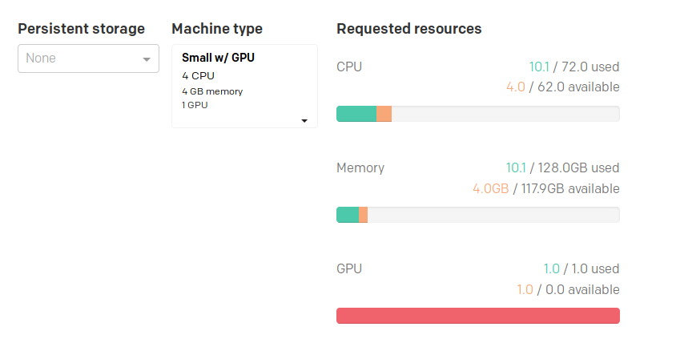

Configuration
See the Configuration section of the
Jupyter package .
Usage
What can the deep-learning-tools package be used for?
The purpose of the deep-learning-tools package is to provide a pre-configure environment for performing deep-learning related tasks. Widely used deep-learning libraries such as PyTorch, Tensorflow, Keras, CNTK, mxnet, Theano and caffe2 are pre-installed. This package also provides all the necessary drivers for using these tools with GPUs, as well as common data-science libraries such as pandas, scipy and numpy (and many more).
This package is an extension of the Jupyter package , so it may be worth reading its documentation first, as it contains basic information on how to use the Jupyter notebook.
Using GPUs in Jupyter
In order to use a GPU, select a machine type which provides a GPU when
installing or reconfiguring. The machine types that provide GPU are suffixed
with w/ GPU.

After installing, navigate to the Jupyter notebook, and run the following code
to test whether a GPU is found. The code will output the model name of the GPU.
import torch torch.cuda.get_device_name(0)
This example uses PyTorch, but all the other libraries should also be able to find and use GPUs.
The output should be similar to Pascal Titan X.
Useful introductions to various deep learning libraries
Using Jupyter with Apache Spark
The Connecting a Jupyter notebook to Apache Spark section of the following
link describes how to use
Apache Spark with Jupyter .
How to add new packages
In case you are missing some packages from the default application image, you can add those packages yourself by creating a custom docker image. See this tutorial for generic instructions on how to add packages.
After having read the tutorial above, you can use the dockerfile below as a starting point when creating the dockerfile that adds new packages.
# See the value of dockerImage in
#
# https://github.com/UninettSigma2/helm-charts/blob/master/repos/stable/deep-learning-tools/values.yaml
#
# to determine the latest base image
FROM quay.io/nird-toolkit/deep-learning-tools2:<use latest tag here>
# Install system packages
USER root
RUN apt update && apt install -y vim
# Install other packages
USER notebook
RUN pip install fastai